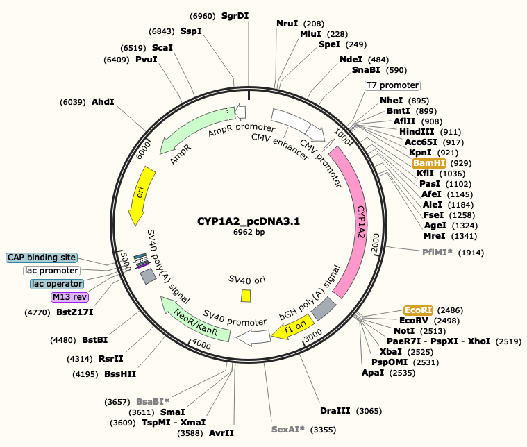

Figure 1. Method of promotion
To make the recombination E.coli that expresses CYP1A2, which is a human protein that we need for measuring the concentration of toxin, we had to design the CYP1A2 expression system. So we searched for an appropriate vector plasmid that has multiple cloning sites(MCS) and the antibiotics resistance gene(Here we have kanamycin resistance gene.) for our system. By using two restriction enzymes(Here we’re going to use EcoRI and and BamHI.) and two primers, recombinant vectors that carry the CYP1A2 gene can be constructed. Then, this vector plasmid has to be taken up to the E.coli cell, especially bacterial competent cells that have been specially treated to transform efficiently.
To confirm whether the vectors with CYP1A2, our target gene are transferred to E.coli cells, the resistance gene that vectors have can be used. Our vectors have a kanamycin resistance gene, so kanamycin treated media will be used to get only E.coli cells which have vectors that are carrying the target gene.
After that, Recombinant E.coli will be grown in the 37C, and they will express CYP1A2 protein. Protein extraction process and protein purification can help to get the enzyme, without other molecules in the total cell lysate. And then, now we can use the enzyme to treat the crops, which have aflatoxins that should be measured by a spectrophotometer.
For protein purification, we are going to use His-tagged CYP1A2 gene.
vector: pcDNA 3.1
promoter region: CMV promoter
Figure 2. CYP1A2 expression system in E.Coli
Figure 3. Vector map of CYP1A2 expression system
(snapgene program)